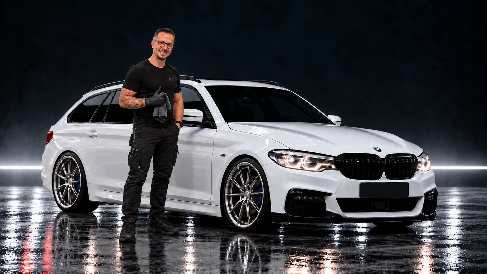

Finale Produktion · PC · Sichtprüfung 03
Politurfahrt – neuer 4K-Entwurf.
Startbild mit M-Emblem und neuem Logo ansehen

Das M-Emblem sitzt hinter dem vorderen Rad. Tim und die bestehende Komposition sind erhalten.
Finale Produktion · PC · Sichtprüfung 03

Das M-Emblem sitzt hinter dem vorderen Rad. Tim und die bestehende Komposition sind erhalten.